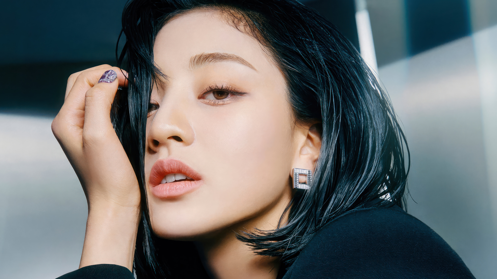

Em fevereiro deste ano (2023), a JYP anunciou oficialmente a estreia da primeira sub-unidade do TWICE. Ao que tudo indica, a empresa está planejando uma série de trabalhos individuais e de sub-grupos para as integrantes. Além de MISAMO, Nayeon fez o debut solo, em 2022 e, em 2023, vai ser a vez da main vocal do grupo, Jihyo. MISAMO lançou o mini-álbum “Masterpiece” e os fãs não poderiam estar mais felizes. A canção principal, “Do Not Touch”, teve ótima recepção e mostra as melhores características das artistas: a elegância, os vocais suaves e a coreografia detalhada.
Lançado no mês de junho (2022), o mini-álbum vem conquistando cada vez mais marcos importantes nos charts da Billboard. Além das recentes conquistas, “IM NAYEON” também alcançou altas posições nos rankings Top Album Sales, Top Current Album Sales, World Albums e Tastemaker Albums. Além disso, a title track “POP!” também marcou seu nome, permanecendo em 19º lugar no chart Global Excl. U.S., e em 38º no Global 2000. Sendo o primeiro debut solo de uma integrante do TWICE, o “IM NAYEON” é composto por sete músicas: "POP!", "Candyfloss", "All or Nothing", "Happy Birthday To You", "Only The Sunset Is Pretty”, assim como parcerias com Felix do Stray Kids através de “No Problem”, e Wonstein com quem divide o single "Love Countdown”.
A cantora sul-coreana Jihyo lançou nesta sexta-feira, 17 agosto de (2023), seu primeiro álbum individual. Intitulado “Zone”, o disco conta com sete músicas, sendo dois feats: “Talkin’ about It”, com o rapper estadunidense 24kGoldn, e “Don’t wanna Go”, com a sul-coreana Heize.Líder do grupo feminino de k-pop Twice, Jihyo é a segunda integrante a lançar projetos individuais. Com seis canções co-escritas por Jihyo, o lançamento do álbum da idol de k-pop contou com a divulgação do videoclipe de “Killin’ me Good”, que atualmente conta com 4 milhões de visualizações no Youtube.
